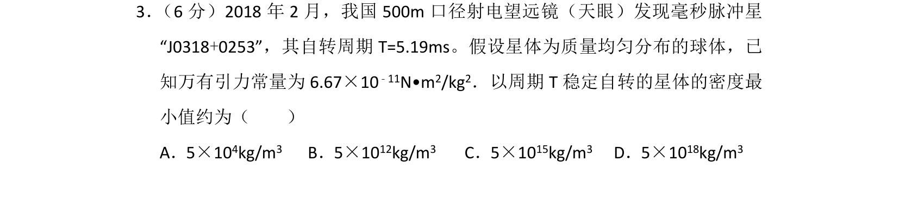
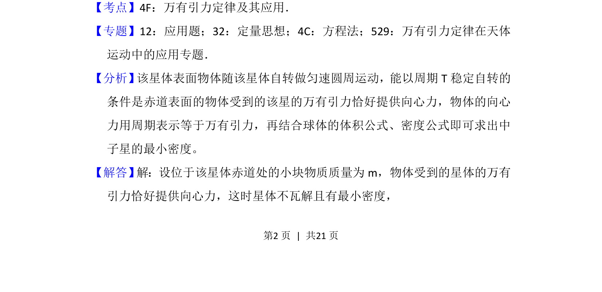
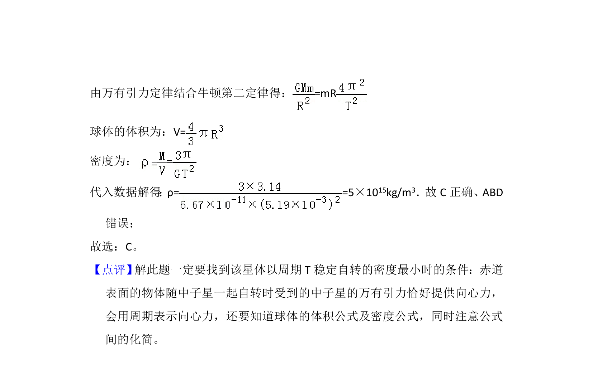

考点：万有引力定律 向心力 密度

通过万有引力提供向心力计算稳定自转星体的最小密度。


📄 原 PDF 第 2 页：
素材/真题/吉林/2008-2024·（吉林）物理高考真题/2018年高考物理试卷（新课标Ⅱ）（解析卷）.pdf
3． （6分）2018年2月，我国500m口径射电望远镜（天眼）发现毫秒脉冲星 “J0318+0253”，其自转周期T=5.19ms。假设星体为质量均匀分布的球体，已 知万有引力常量为6.67×10 ﹣11N•m2/kg2．以周期T稳定自转的星体的密度最 小值约为（ ） A．5×104kg/m3 B．5×1012kg/m3 C．5×1015kg/m3 D．5×1018kg/m3
【考点】4F：万有引力定律及其应用．菁优网版权所有 【专题】12：应用题；32：定量思想；4C：方程法；529：万有引力定律在天体 运动中的应用专题． 【分析】 该星体表面物体随该星体自转做匀速圆周运动，能以周期T稳定自转的 条件是赤道表面的物体受到的该星的万有引力恰好提供向心力，物体的向心 力用周期表示等于万有引力，再结合球体的体积公式、密度公式即可求出中 子星的最小密度。 【解答】 解：设位于该星体赤道处的小块物质质量为m，物体受到的星体的万有 引力恰好提供向心力，这时星体不瓦解且有最小密度，